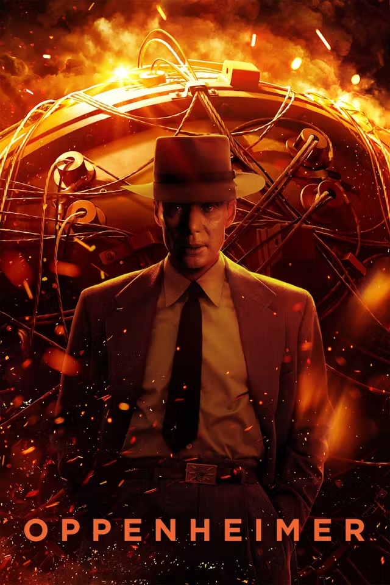

ოპენჰაიმერი

კაი ბერდის და მარტინ შერვინის წიგნზე “ამერიკელი პრომეთე: ჯულიუს რობერტ ოპენჰაიმერის ტრიუმფი და
ტრაგედია” დაფუძნებული კრისტოფერ ნოლანის ბიოგრაფიული დრამა, რომელიც 1943-1945 წლებში მანჰეტენის პროექტის დროს ლოს-ალამოსის ლაბორატორიის დირექტორის,
ამერიკელი ფიზიკოს-თეორეტიკოსის რობერტ ოპენჰაიმერის, და მისი უდიდესი წვლილის შესახებ მოგვითხრობს, რომლის ხელმძღვანელობით შეიქმნა ისტორიაში პირველი ატომური ბომბი, რის
გამოც მას ხშირად მოიხსენიებენ როგორც “ატომური ბომბის მამად”.